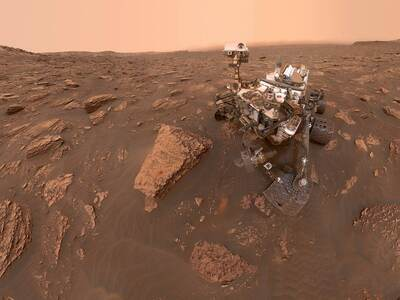
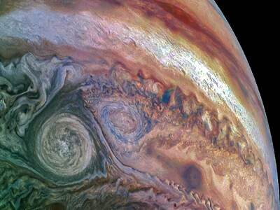
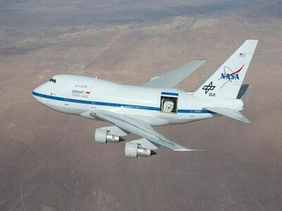
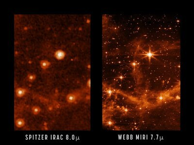
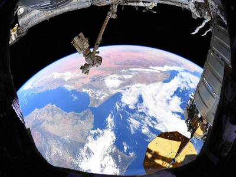
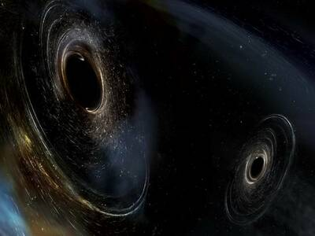

Imágenes publicadas por algunas de mis páginas web favoritas con enlaces a su contenido

Misión Curiosity Marte

Sonda Juno en Jupiter

Observatorio Telescopio Sofía

Comparativa Telescopio James Webb

Vista desde la Estación Espacial Internacional

Ligo detección ondas gravitacionales